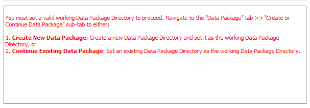
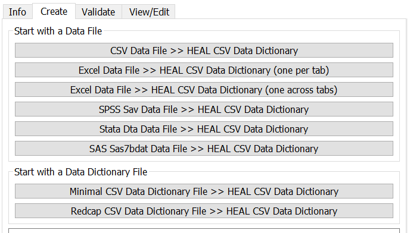
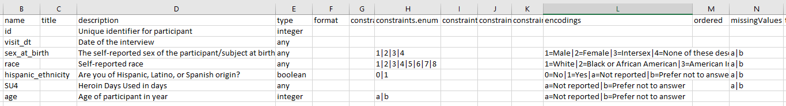
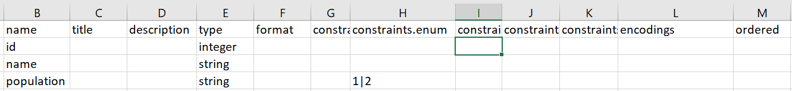
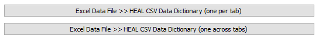

Your first step each time you open the tool should be to set your working data package directory.
If you have not yet set your working data package directory this session, do so before attempting to create a data dictionary.
If you have not set your working data package directory before attempting to use the data dictionary converter, the tool will not be able to save your output data dictionary to your data package folder. You will receive the error message below.

When you would like to create a new data dictionary, go to the "Create" tab. You will be able to start either with a data file or a data dictionary file, if you have one.

Special considerations for certain files
To ensure that your files are able to be read into the tool and converted correctly, certain file types may require some additional considerations/preparation.
Select the data dictionary conversion that you would like to complete and select the corresponding file in File Explorer.
If the conversion is successful, then the User Status Message Box will print a successful message:
Some input file types contain more metadata than others, so depending on the input file, you may need to take additional steps to ensure you have a valid HEAL-compliant data dictionary.
Ensuring that you have a valid HEAL data dictionary¶
Once you have output your data dictionary, you may have to take additional steps, depending on your original input file type, to ensure that your data dictionary is "valid." A valid HEAL-compliant data dictionary will contain at least a name and description for each variable.
If you started with an input file that was rich in metadata, this metadata will be extracted by the tool. You can expect that the data dictionary output by the tool will be fairly complete and likely will be valid. Metadata-rich files include SPSS and Stata files, and SAS files (if a sas7bcat file is included).
Similarly, if you input a REDCap CSV data dictionary, your output HEAL CSV data dictionary should be fairly complete and valid.
Example of the data dictionary output based on a metadata-rich file:

If you started with a CSV or Excel file, however, the output data dictionary will be a "minimal data dictionary." Unlike metadata-rich files (SPSS, Stata, SAS), which contain information about variable names, labels, and encodings within the file, CSV and Excel files do not contain this metadata. Therefore, the output data dictionary will contain the variable names and types, but not descriptions. The tool will also attempt to infer whether variables are categorical, and if so, what those categories are. However, if there are categories not included in the data, those will not be able to be inferred and included.
Example of the data dictionary output based on a CSV or Excel file:

If you start with a non-metatadata-rich file, you will need to edit your data dictionary after it has been output. For the data dictionary to be considered valid, each variable must have a name and description. You may also want to add in additional constraints that the tool did not infer such as variable encodings.
For more information on the additional columns within the HEAL-compliant data dictionary output by the tool as well as guidance on which fields may be most useful to prioritize filling out, refer to the Data Dictionary metadata schema.
Certain data files and data dictionaries may require additional steps and preparation. See below for information on these specific circumstances for certain data files.
In order for the tool to successfully produce a data dictionary from an Excel file with multiple tabs, each tab within that Excel must first be a clean dataset that follows a standard tabular format: the top row should list all variables across the columns and the columns should contain the data.
Once you have a clean dataset in each tab, there are two options for output for Excel data files with multiple tabs.

Excel Data File >> HEAL CSV Data Dictionary (one per tab)
This will take a multi-tab Excel file and output one data dictionary for each tab in the Excel. The naming convention of the file will be 'heal-csv-dd-filename-tabname.'
Each data dictionary will include a row for every variable within that specific tab.
Excel Data File >> HEAL CSV Data Dictionary (one across tabs)
This will take a multi-tab Excel file and output a single data dictionary with structure 'heal-csv-dd-filename.'
This single data dictionary will include a row for every variable across all tabs.
If you use this method, it is important that you ensure that variable names across sheets are consistent.
This works particularly well if your data is structured such that the same variables are used across sheets.
However, if you are using the same variable name in multiple different sheets, but it does not have the same meaning in each sheet, you should either vary the name of variables across sheets or you should use the one per tab option.
For tabular files saved in SAS (sas7bdat), you will want to have an accompanying catalog file (sas7bcat). Although the sas7bdat contains variable metadata information (variable names and variable labels/descriptions), the sas7bcat contains information about the formats and encoding of the variables, which are important for producing a complete data dictionary.
Many SAS users build formats and labels into their data processing and analysis scripts. In this section, we provide syntax that can be easily copy-pasted into these existing workflows to create sas7bdat and sas7bcat files to input into the vlmd tool.
This script template can be run separately or inserted directly at the end of a SAS user's workflow.
Note
If inserted directly, remember to delete the lines with %INCLUDE)
Template
template.sas
/*1. Read in data file without value labels and run full code. Note: The most important pieces to run here are the PROC FORMAT statement(s) and any data steps that assign formats and variable labels which are needed for the data dictionary. You may have defined variable labels and values in separate scripts for different analyses. In order to capture all your defined variable labels and values across scripts, you will need an %INCLUDE statement for each SAS script that defines unique variable labels or value labels.*/%INCLUDE"<INSERT SAS SCRIPT HERE FILE PATH HERE>"; /* THIS WILL RUN A SEPARATE SAS SCRIPT*/%INCLUDE"<INSERT SAS SCRIPT HERE FILE PATH HERE>"; /* THIS WILL RUN A SECOND SEPARATE SAS SCRIPT*//*2. Output the format catalog (sas7bcat) *//*2a. If you do not have an out directory, assign one to output the SAS catalog and data file. If you already have an out directory assigned, skip this step and replace “out” with your out directory libname in the flow*/libnameout"<INSERT THE DESIRED LOCATION (FILE PATH) TO YOUR SAS7BCAT AND SAS7BDAT FILES HERE>";
/*2b. Output the format catalog. Note: The format catalog is automatically stored in work.formats. This step copies the format file to the out directory as a sas7bcat file.*/proc catalog cat=work.FORMATS;
copy out=out.FORMATS; run;/*3. Output the data file (sas7bdat) */data out.yourdata;
set <INSERT THE NAME OF YOUR FINAL SAS DATASET HERE>; run;
The below SAS syntax is an example of how to use the template within your SAS workflow.
The below sample script creates all of our variable and value labels. Your workflow may include multiple SAS scripts with multiple format statements and may include analyses and other PROC calls for data exploration,
but for demonstration purposes, this example only uses one script and focuses on defining the variable and value labels.
Example
my_existing_sas_workflow.sas
/*1. Read in input data */proc import datafile="myprojectfolder/input/mydata.csv"out=raw
dbms=csv replace;
getnames=yes;run;/*2. Set up proc format and apply formats and variable labels in data step *//*Create encodings (value labels)*/proc format;
VALUE YESNO
0 ="No"1 ="Yes"
VALUE PUBLIC
1='State mental health authority (SMHA)'2='Other state government agency or department'3='Regional/district authority or county, local, or municipal government'4='Tribal government'5='Indian Health Service'6='Department of Veterans Affairs'7='Other'
VALUE FOCUS
1='Mental health treatment'2='Substance abuse treatment'3='Mix of mental health and substance abuse treatment (neither is primary)'4='General health care'5='Other service focus';
**Apply formats to dataset;data processed;
set raw;
/*Assign formats*/format YOUNGADULTS TREATPSYCHOTHRPY TREATTRAUMATHRPY YESNO. FOCUS FOCUS. PUBLIC PUBLIC.;
/*Add variable labels*/label YOUNGADULTS="Accepts young adults (aged 18-25 years old) for Tx"
TREATPSYCHOTHRPY="Facility offers individual psychotherapy"
TREATTRAUMATHRPY="Facility offers trauma therapy"
FOCUS="Primary treatment focus of facility"
PUBLIC="Public agency or department that operates facility";run;
This second script called my_output.sas is the filled out template. Note the %INCLUDE function that calls my_existing_sas_workflow.sas
my_output.sas
/*1. Read in data file without value labels and run full code. Note: The most important pieces to run here are the PROC FORMAT statement(s) and any data steps that assign formats and variable labels which are needed for the data dictionary. You may have defined variable labels and values in separate scripts for different analyses. In order to capture all your defined variable labels and values across scripts, you will need an %INCLUDE statement for each SAS script that defines unique variable labels or value labels.*/*/
%INCLUDE"myprojectfolder/my_existing_workflow.sas"; /* THIS WILL RUN A SEPARATE SAS SCRIPT*//*2. Output the format catalog (sas7bcat) *//*2a. If you do not have an out directory, assign one to output the SAS catalog and data file.*/libnameout"myprojectfolder/output";
/*2b. Output the format catalog. Note: The format catalog is automatically stored in work.formats. This step copies the format file to the out directory as a sas7bcat file.*/proc catalog cat=work.FORMATS;
copy out=out.FORMATS; run;/*3. Output the data file (sas7bdat) to your output folder*/data out.yourdata;
set processed; run;
After creating the necessary sas7bdat and sas7bcat files, you are ready to convert to a HEAL-compliant data dictionary using the data packaging tool.
Before you begin, ensure that your sas7bdat and sas7bcat files are saved in the same folder. The tool will only ask you to select your sas7bdat file. If the sas7bcat file is located in the same directory, the tool will automatically detect it, as well. If not detected, the tool will run without the sas7bcat catalog file and the encodings (i.e., value labels) will not be extracted from the catalog file and will not appear in your data dictionary. The output will be a minimal HEAL-compliant data dictionary.
If you have already created a data dictionary in CSV format, you can also use that to generate a HEAL-compliant data dictionary.
The only requirements for a "minimal CSV data dictionary" to be ingested by the tool and converted into a HEAL-compliant data dictionary are two columns: name and description. With these two columns included, the data dictionary output will be a valid data dictionary (although it will be a fairly minimal data dictionary).
However, this does not mean that you must only include these two columns. You may already have additional columns in your existing data dictionary, or you may want to add columns beyond name and description to better describe your dataset. For information on which additional columns it may be most helpful to include within your minimal data dictionary, and how to create, label, and format them to be successfully ingested and output by the data dictionary converter tool, refer to the HEAL Data Dictionary metadata schema.
If you collected data in a REDCap data management system, HEAL-compliant data dictionaries can be generated directly from an exported REDCap data dictionary.
The REDCap data dictionary export serves the purpose of providing variable-level metadata in a standardized, tabular format and is generally easy to export.
To download a REDCap CSV export, do the following*:
After logging in to your REDCap project page, locate the Data dictionary page. A link to this page may be available on the project side bar (see image below) or in the Project Setup tab at the top of your page.
After arriving at the Data dictionary page, click on Download the current data dictionary to export the dictionary (see below).
*there may be slight differences depending on your specific REDCap instance and version